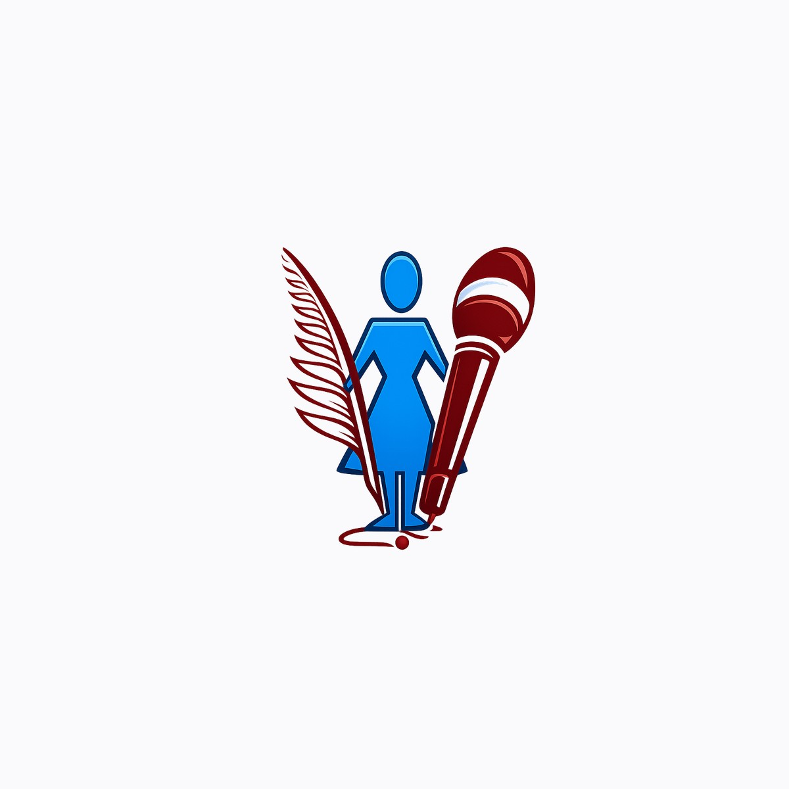

FINTECH • PAYMENT GATEWAY • NGO PORTAL
EMWA Donation & Payment Gateway Integration
An end-to-end, secure payment checkout and donation architecture engineered for the Ethiopian Media Women Association (EMWA), integrating the Chapa gateway with cryptographic server verification and dynamic receipt generation.

1. The Context: Empowering Ethiopian Women in Media
The Ethiopian Media Women Association (EMWA) is a prominent non-profit organization dedicated to empowering women journalists, advancing freedom of the press, and championing gender equity throughout Ethiopia's media landscape.
To support its initiatives, training programs, and legal advocacy, EMWA needed a modernized, trust-inspiring donation checkout on its web portal. My mandate on this project was specifically focused as the Payment Integration Engineer: designing and executing the entire payment architecture, checkout flow, gateway security, and automated donor receipt generation.
2. Architecture & Server-Side Security
Financial transactions in Ethiopia require rigorous confidentiality and compliance. Handling API keys directly in client-side JavaScript risks exposing private credentials.
To ensure total security, the payment pipeline was built using TanStack Start Server Functions (createServerFn). This guarantees that all communication with the Chapa Payment Gateway and the private CHAPA_SECRET_KEY remain 100% server-side and inaccessible to client browsers.
Payment Lifecycle Sequence:
- Client Donor Form (
/donate): Donor selects preset amounts (50 ETB – 10,000 ETB) or custom amounts, providing verified contact metadata. - Server-Side Initialization:
initializeDonation()server function validates inputs, generates a tamper-proof cryptographic referenceEMWA-DONATION-[timestamp]-[random], and calls Chapa'sPOST /v1/transaction/initialize. - Gateway Redirection: The client receives the signed
checkout_urland completes payment via telebirr, CBE Birr, or local/international cards. - Cryptographic Verification: Upon return to
/donate/success?tx_ref=..., the server function invokes Chapa'sGET /v1/transaction/verify/{txRef}. - Automated PDF Receipt: Only after the gateway strictly verifies
status === successdoes the client unlock the verified Thank-You modal and generate a downloadable, timestamped PDF receipt viajsPDF.
3. Technical Challenges & Solutions
Challenge A: Preventing Client-Side Transaction Tampering
A common vulnerability in web checkouts is client-side payload modification (e.g., changing the amount or recipient ID right before sending).
Solution:
Implemented dual validation with Zod schemas on both client and server. The server function strictly enforces minimum donation thresholds (50 ETB), validates contact fields, and constructs the authorization headers in a clean isolated execution environment before dispatching to Chapa.
Challenge B: Direct Bank Transfer Alternative Workflow
Many institutional Ethiopian donors prefer direct wire transfers or mobile banking without going through card gateways.
Solution:
Engineered interactive bank transfer reference cards featuring Commercial Bank of Ethiopia (CBE), Awash Bank, and Telebirr. Donors can copy verified account numbers with one-click feedback and view instructions for submitting transaction reference codes to the EMWA finance team.
4. Key Deliverables & Results
- Frictionless Donor Experience: Supports both instant online checkout (telebirr, cards, CBE Birr) and offline wire transfer options.
- Zero Secret Exposure: Private payment credentials remain safely isolated on the server tier.
- Instant Accountability: Automated client-side PDF receipt generation with verifiable transaction references guarantees donor confidence.